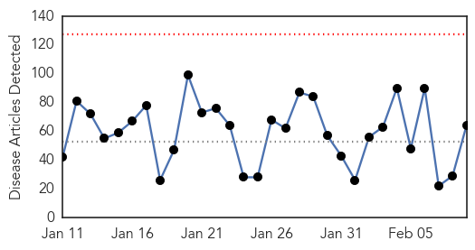
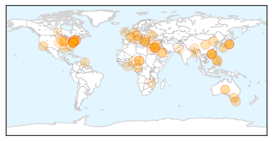

Unknown
30-Day Web Trend
0 alerts, 0 warnings

30-Day Twitter Trend
2 alerts, 0 warnings

Article Locations
Article Confidences
Top Articles:
- 0.986
- Hong Kong struggling with flu outbreak as death toll climbs, East Asia News & Top Stories
- 0.975
- Health Ministry expects high MERS cases in coming weeks
- 0.965
- Great shortage of flu vaccines
- 0.958
- Health Department testing more after school TB case
- 0.918
- Inland Bays, Atlantic Ocean, Rehoboth Beach, Lewes, Milton, Dewey Beach, USA
- 0.917
- Chicago Tribune
- 0.917
- Chicago Tribune
- 0.917
- Chicago Tribune
- 0.917
- Chicago Tribune
- 0.917
- Chicago Tribune
- 0.917
- Chicago Tribune
- 0.917
- Chicago Tribune
- 0.917
- Chicago Tribune
- 0.917
- Chicago Tribune
- 0.917
- Chicago Tribune
- 0.917
- Chicago Tribune
- 0.917
- Chicago Tribune
- 0.917
- Chicago Tribune
- 0.917
- Chicago Tribune
- 0.917
- Chicago Tribune
- 0.917
- Chicago Tribune
- 0.917
- Chicago Tribune
- 0.917
- Chicago Tribune
- 0.917
- Chicago Tribune
- 0.917
- Chicago Tribune
- 0.917
- Chicago Tribune
- 0.917
- Chicago Tribune
- 0.917
- Chicago Tribune
- 0.917
- Chicago Tribune
- 0.917
- Chicago Tribune
- 0.917
- Chicago Tribune
- 0.917
- Chicago Tribune
- 0.917
- Chicago Tribune
- 0.915
- Melbourne man contracts rare and potentially fatal Japanese encephalitis virus in Bali
- 0.900
- Tuberculosis case discovered at Beechview school
- 0.889
- 145 deaths this year as deadly flu bug hits Hong Kong, East Asia News & Top Stories
- 0.869
- Livestock strain of MRSA found in pigs in England
- 0.866
- Hooded gunmen fire on French police in Marseille -source
- 0.845
- UConn Students Hospitalized With Illnesses
- 0.823
- Cases of RSV reach epidemic levels in Louisiana
- 0.799
- WHO working with UN agencies on flood response in the former Yugoslav Republic of Macedonia
- 0.754
- Gov't should reconsider exporting medics to Trinidad
- 0.718
- Ministry provides free tetanus-diptheria shots
- 0.688
- Gomoa Brofo faces water shortage
- 0.676
- Little cherry virus checks reveal extent of disease
- 0.651
- H5N6 avian flu fatality in Yunnan
- 0.635
- UConn Hit With Outbreak Of Unknown Illness Involving Vomiting « CBS New York
- 0.612
- Homeless veteran settles Legionnaires' lawsuit against VA
- 0.608
- Deworm to not lose gains made on child health and nutrition
- 0.598
- Mugabe's fall shows he is alert
Showing top 50 articles...
Top Tweets:
- 0.802
- Recuerdo en kinder que me premiaron con un libro por ser el mejor de la clase que leía. @daphnelyanne Tu abuela fue.
- 0.798
- Recuerdo en 4to grado que fui el más rápido en las tablas de multiplicar de todos los salones del grado.
- 0.609
- RT: Malcolm Brenner, de 63 años, admite haber sido seducido por un delfín con el que mantuvo sexo durante más de un año. ht…
- 0.511
- Fact: You cannot get the flu from the flu vaccine. Learn more about vaccine facts and myths http://t.co/ZJowHzeqlA.
Ebola
30-Day Web Trend
0 alerts, 0 warnings

30-Day Twitter Trend
3 alerts, 0 warnings

Article Locations

Article Confidences

Top Articles:
- 1.000
- Ebola threatens economic gains in affected countries
- 1.000
- Ebola threatens economic gains in affected countries
- 1.000
- Researchers study epidemiology of Ebola Virus Disease to prevent future disease outbreaks
- 0.999
- What Ebola Teaches Us About Public Health In America
- 0.999
- Filipino doctors back from Africa want OFW ban, quarantine to stay
- 0.999
- Researchers fear Ebola virus has mutated and are studying contagion degree — MercoPress
- 0.998
- Guinea to expand use of experimental anti-Ebola drugs
- 0.997
- 'Fear, instability made it difficult to control Ebola in Africa'
- 0.997
- Every Single Kid Who Was Orphaned By Ebola In Guinea Now Has A Home
- 0.997
- The Coca-Cola Africa Foundation continues its Ebola relief efforts through clean water access
- 0.997
- Experimental anti-Ebola drug approved for wider use in Guinea
- 0.996
- 21-day quarantine for OFWs from Ebola-hit countries stays
- 0.995
- After The Worst In Liberia And Sierra Leone
- 0.994
- Togolese President Pays Solidarity visit to Sierra Leone
- 0.993
- Ebola quick test from Germany
- 0.993
- Guinea approves wider use of Ebola drug
- 0.992
- DOH stands pat on 21-day Ebola quarantine
- 0.989
- Ebola survivors clinic to be established « Awoko Newspaper
- 0.988
- Last mile in fight against Ebola will be the hardest says senior UN relief official
- 0.983
- Twists, turns, eventually lead to promising Ebola vaccine
- 0.983
- Twists, turns, eventually lead to promising Ebola vaccine
- 0.982
- Twists, turns eventually lead to promising Ebola vaccine
- 0.981
- Sierra Leoneans in Australia donate to Salone government
- 0.980
- Md. local governments lax in learning about open meetings
- 0.980
- Inmate at center of Baltimore jail scandal gets 12 years
- 0.980
- RadioShack will close 15 Baltimore-area stores by March 31
- 0.971
- As Ebola fades, questions arise over billions in US aid
- 0.969
- Ebola Vaccine Trials Can Offer 'Signs Of Hope'
- 0.961
- National
- 0.961
- US Nurse donates 40ft container OF medical supplies to fight Ebola « Awoko Newspaper
- 0.951
- Chinese executes business tycoon linked to murder
- 0.951
- Sierra Leone News: China trains 5,000 Community Leaders in Sierra Leone
- 0.951
- 21-day quarantine for OFWs from Ebola-hit countries stays
- 0.951
- Reinvigorating the Fight
- 0.951
- China Gives U.S.$2 Milion Ebola Food Aid
- 0.951
- Liberia: U.S$90 Million Petroleum Accord Signed
- 0.951
- China provides food aid to Ebola-hit Liberia
- 0.951
- In South Sudan, senior UN official says 'no doubt' rights violations are ongoing
- 0.946
- Chancellor pledges $50m to help countries fighting Ebola
- 0.931
- Connaught Hospital is fully functional « Awoko Newspaper
- 0.930
- Britain pledges millions to new Ebola fund
- 0.930
- My job is to help stop Ebola horror « Express & Star
- 0.916
- LIBERIA: Togolese President Faure Gnassingbe,ECOWAS’ President Kadré Ouédrago Pay One-Day Visit
- 0.898
- How a New York Psychologist and an Israeli Humanitarian Organization Are Helping Sierra Leone Stand Up to Ebola (INTERVIEW)
- 0.897
- Time's 'person of the year' feels kinda lost
- 0.866
- Time's 'Person Of The Year' Is Feeling Kinda Lost
- 0.831
- Violent protests in Ebola-hit Guinea after imam's arrest
- 0.805
- ECOWAS vows efforts to resume flights to Sierra Leone
- 0.798
- Secretary-General Appoints Bintou Keita of Guinea Ebola Crisis Manager for Sierra Leone
- 0.792
- Sierra Leone News : WHH Provides food and Non-food items to Quarantined Homes at Peninsular Area: Sierra Leone News
Showing top 50 articles...
Top Tweets:
- 0.921
- Twists & Turns Lead To Promising Ebola Vaccine - CBS Local http://t.co/un0wUb9iVd ebola EVD
- 0.900
- Sierra Leone's Ministry of Health recorded 19 new cases of Ebola at the weekend. Declining figures, but the battle continues.
- 0.898
- Twists, turns, eventually lead to promising Ebola vaccine - U.S. News & World Report http://t.co/3YpKl4R2wp ebola EVD
- 0.896
- After Ebola: See Life Returning to Normal in Liberia - TIME http://t.co/xkuREx7Yk6 ebola EVD
- 0.885
- Ebola Update: 22,525 confirmed, probable and suspected cases in 3 most affected countries, with 9,004 deaths. EbolaResponse
- 0.861
- German drugmaker Stada to launch rapid test for Ebola - Reuters http://t.co/sUzl019UAw ebola EVD
- 0.861
- German drugmaker Stada to launch rapid test for Ebola - Reuters http://t.co/EquMmHeTnZ ebola EVD
- 0.854
- Persevering past roadblocks to build promising Ebola vaccine - Yahoo News http://t.co/IvjQpGQcYk ebola EVD
- 0.831
- Ebola On The Ground: Ebola Deeply and OkayAfrica at Sierra Leone’s Epicenter http://t.co/ZIHTpIxJzb via
- 0.814
- Twists, Turns, Eventually Lead to Promising Ebola Vaccine - ABC News http://t.co/uxv2sU0fFt ebola EVD
- 0.814
- Twists, Turns, Eventually Lead to Promising Ebola Vaccine - ABC News http://t.co/ZtfyWoGs4K ebola EVD
- 0.814
- Twists, Turns, Eventually Lead to Promising Ebola Vaccine - ABC News http://t.co/LM7e9B4wPO ebola EVD
- 0.802
- Guinea's Health Minister Says Ebola Situation 'Improving' Via http://t.co/YUlzbVgaic
- 0.799
- Burnings, Bombings, Ebola: Not All Dramatic Events Are Game-Changers - Daily Beast http://t.co/l7jZu1pq3X ebola EVD
- 0.799
- Burnings, Bombings, Ebola: Not All Dramatic Events Are Game-Changers - Daily Beast http://t.co/fBgRqsRzLb ebola EVD
- 0.799
- Burnings, Bombings, Ebola: Not All Dramatic Events Are Game-Changers - Daily Beast http://t.co/Snw61HQ3Vx ebola EVD
- 0.799
- Burnings, Bombings, Ebola: Not All Dramatic Events Are Game-Changers - Daily Beast http://t.co/J4hcoWAzcV ebola EVD
- 0.799
- Burnings, Bombings, Ebola: Not All Dramatic Events Are Game-Changers - Daily Beast http://t.co/BnIMDxwhn9 ebola EVD
- 0.799
- Burnings, Bombings, Ebola: Not All Dramatic Events Are ?Game-Changers? - Daily Beast http://t.co/N0mPQCyBps ebola EVD
- 0.788
- Part 3 in our Sierra Leone Ebola series with follows medical students who join a surveillance team http://t.co/9Z9NLVLDp3
- 0.773
- Government pledges nearly £33m to new Ebola fund - BBC News http://t.co/oGkHvePptK ebola EVD
- 0.742
- As Ebola fades, questions arise over billions in US aid - Fox News http://t.co/yenkGpd9cb ebola EVD
- 0.742
- As Ebola fades, questions arise over billions in US aid - Fox News http://t.co/ueTAt5xYKk ebola EVD
- 0.742
- As Ebola fades, questions arise over billions in US aid - Fox News http://t.co/Yz3uMivIlr ebola EVD
- 0.742
- As Ebola fades, questions arise over billions in US aid - Fox News http://t.co/HsTScDbVvQ ebola EVD
- 0.638
- A photographer documents Ebola’s deadly spread. http://t.co/qkAg5oxNUJ Via
- 0.626
- Via: To Get To Zero Ebola Cases, It'll Cost A Lot: Roughly $1.5 Billion http://t.co/RRizOAxizO Ebola Ebolaresponse Ebolaoutbreak
- 0.626
- RT: Ebola On The Ground, Part 3: The Ebola Surveillance Team: http://t.co/k5Bm1AiT69 http://t.co/GPTuFcIIcp
- 0.542
- RT: This is brilliant & @okayafrica produce on-the-ground ebola reporting from Sierra Leone 2 min video https://t.…
- 0.529
- CDC has updated U.S. guidance on lab testing for assessment & care of patients for whom Ebola is a concern. http://t.co/5n4oJLnVom